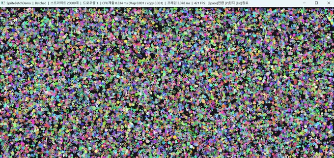
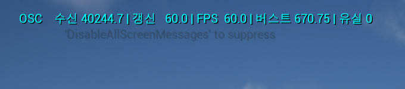
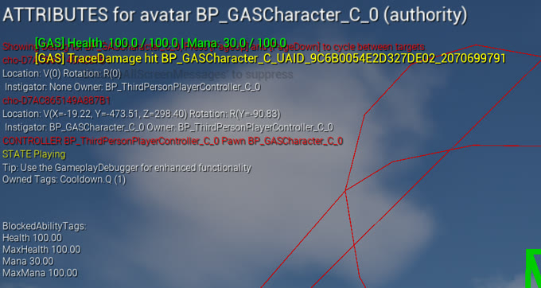

조준혁
GAME CLIENT PROGRAMMER · UNREAL ENGINE 5 / UNITY · C++ / C#
게임 클라이언트 프로그래머입니다. 프로젝트마다 제가 맡은 부분과 만들면서 막혔던 것을 적었습니다.
- 수상
- 과학기술정보통신부 장관상 (대상) 2024.12 · 메타버스 아카데미 3기 · Stage On
- 출시
- Google Play · App Store Bounce Hero : 꿈돌이 · 사수와 2인 공동 개발
- 학력
- 가천대학교 컴퓨터공학과 2019.02 ~ 2026.02 · GPA 4.02 / 4.5
프로젝트
-

SpriteBatchDemo
엔진 없이 Win32와 Direct3D 11만으로 만든 2D 스프라이트 렌더러입니다. 움직이는 스프라이트 2만 개에 배칭 · 인스턴싱 · 컬링을 직접 구현하고, 각각이 렌더 스레드 CPU를 얼마나 비우는지 숫자로 실측했습니다.
- 담당
- 전부. 창 · 디바이스 · 스왑체인 · 셰이더부터 세 가지 제출 경로
(
Naive/Batched/Instanced)와 계측까지. - 어려움
- 드로우 콜 횟수만 낮춘 실험은 1.35배뿐이었음 → 진짜 비용은 드로우 횟수가 아니라 업로드를 2만 번 하는 쪽이었고, 그걸 포함해 다시 재자 CPU 제출 약 5배가 드러남
-

Stage On
버튜버의 실시간 라이브를 위한 가상 콘서트 플랫폼. 관객이 무대를 직접 만들어 저장하고 버튜버는 해당 무대에서 공연을 개최할 수 있습니다.
- 담당
- 무대 구성 시스템(하늘·테마·특수효과·지면)을 카테고리별 프리셋을 액터·레벨 단위로 조합하도록 구조 개편.
SceneCapture로 만든 무대를 찍어 썸네일 생성·업로드.
외부 모션캡처 데이터를 언리얼로 들여오는 수신 구조 — 구조 선택과 연결을 담당했고, 소켓·파싱은VRM4U·OSC플러그인이 처리. - 어려움
- 뼈(본) 하나마다
RPC를 보내니 본 개수만큼 호출이 늘어 실시간 전송시 프레임 드랍 발생 →UDP소켓을 이용한OSC수신으로 전환
-

MiniOscReceiver
위 Stage On 당시엔 시간이 부족해 깊이 파지 못했던 구조를 후에 재구현해 측정한 실험입니다. 소켓·수신 스레드·바이트 파서를 만들어 RPC와 OSC의 차이를 살펴보았습니다.
- 담당
UDP소켓.
1ms 폴링 수신 스레드.
OSC 바이트 파싱(4바이트 정렬·빅엔디안·비트 재해석).
SPSC 락프리 큐 - 수신 스레드가 게임 스레드를 기다리지 않음.- 어려움
- 수신 콜백에서 액터를 직접 움직이니 값이 절반만 갱신되거나 크래시
(언리얼
UObject는 스레드 세이프하지 않음) → SPSC 락프리 큐로 넣는 쪽과 꺼내는 쪽을 나눔. 락을 안 쓴 이유는 수신 스레드가 멈추면 그동안 소켓을 못 읽어 유실로 이어지기 때문
Unreliable · Reliable RPC 대비 OSC 전달률 100% · 유실 0 확인 상세 보기 -

Bounce Hero : 꿈돌이
대전관광공사 마스코트 꿈돌이가 발판을 밟고 올라가는 모바일 점프 게임. 양대 마켓에 출시하고 라이브 운영까지 했습니다.
- 담당
- 발판 무한 생성기 - 올라간 만큼 위쪽을 계속 만들어 붙임.
점수 기반 난이도 조절(점수가 오를수록 발판 간격·적 등장 주기를 조정).
타입별 오브젝트 풀링.
인앱 결제(IAP).
길드(Firebase트랜잭션)와 스테이지별 랭킹.
AdMob연동. - 어려움
- 오브젝트 풀링에서, 풀링은
Destroy로 없애는 게 아니라 껐다 켜는 것이라Start에 걸어 둔 이벤트 구독과 발판 색 변환이 다시 꺼냈을 때도 그대로 남았음 → 수명 기준을Start에서OnEnable/OnDisable(풀에서 꺼내고 넣는 순간)로 옮김
-

배달왕 김족구
주문을 받아 배달가방에 음식을 실어 배달하는 게임. 무엇을 어디에 싣느냐에 따라 배달통이 기웁니다(놓인 아이템으로 기울기 계산).
- 담당
- 인벤토리 설계·구현 - MVC 구조.
Yarn Spinner 대화 연동과 선택지 UI.
배달 퀘스트 구조 재설계 - 팀원이 만든 퀘스트 프레임워크를 용도에 맞게 재구성.
패드와 키보드를 둘 다 받는 입력 구조 설계. - 어려움
- 퀘스트가 NPC를 참조해 특정 장소로 배달을 보낼 수 없었음 → 기존 퀘스트 흐름은 그대로 두고 퀘스트 대상을 NPC에서 장소로 옮겨 재구성
-

프로젝트 세종대왕
한옥 마을 배경의 멀티플레이 미니게임 모음. 달리기 대결 · 발음 대결 · OX 퀴즈 총 세 종류의 맵으로 구성되어 있습니다.
- 담당
- 세션 생성·검색·참가 — 방 만들기·찾기·들어가기.
로비 UI.
달리기 + 초성 퀴즈 미니게임. - 어려움
- 한글 방 이름이 Steam을 거치면 깨짐(광고값 경로에서 비ASCII 보존이 보장되지 않음) →
Base64로 인코딩해(영문·숫자만 올라가게) 등록하고 표시할 때 디코딩.
호스트가 나가면 남은 클라가 고립됨 →OnNetworkFailure로 감지해 로비 복귀시킴.
-

Isekiro
적의 공격을 타이밍에 맞춰 튕겨내며 체간을 깎는 세키로 모작입니다.
- 담당
- 패링 판정.
내적으로 화면 정면에 가까운 적을 고르는 락온.
Line Trace로 벽에 가렸는지 시야 검증.
Curve보간 그래플링 훅.
패링 허용 시간 — 일반 8 frame · 위험 1 frame 상세 보기 -

GASPractice
LoL식 QWER 스킬 구조를 Gameplay Ability System으로 재현하고, 그 위에 CommonUI 레이어 프레임워크와 게임패드 내비게이션을 얹은 학습 프로젝트입니다.
- 담당
- 발동(
GameplayAbility)과 비용·쿨다운·피해(GameplayEffect) 분리( '무엇을 한다'와 '무엇이 바뀐다'를 분리).
UI 레이어 프레임워크와Slate쿨다운 링 구현. - 어려움
- 화면이 늘수록 겹치는 순서(Z)와 입력 모드를 코드가 일일이 기억해야 함 → 레이어를 Game · GameMenu · Menu · Modal 넷으로 고정하고 입력 모드는 화면이 스스로 선언하게 전환
이력
프로젝트가 다루지 않는 사실실무
- 주식회사 디몽 — 게임 클라이언트 인턴
- 2025.03–06 · Unity / C#
두 프로젝트에 참여했습니다. 꿈돌이는 사수와 둘이 0부터 만들어 출시한 신규 개발이고,
ZOMVIRUS는 2025년 2월에 이미 출시돼 있던 PC VR 게임에
Steam Achievement구현과 무기 슬롯 리팩터링으로 참여했습니다.
학력 · 과정
- 가천대학교 컴퓨터공학과
- 2019.02 ~ 2026.02
GPA 4.02 / 4.5
자료구조, 객체지향 프로그래밍, 소프트웨어 설계. - 메타버스 아카데미 3기
- 2024.04 ~ 12 · Unreal Engine
UE5 기반 팀 프로젝트로 실시간 콘텐츠 개발 과정을 수행했습니다.
수상
- 과학기술정보통신부 장관상 (대상)
- 2024.12 · 메타버스 아카데미 3기 성과공유회 가상 콘서트 플랫폼 Stage On으로 수상했습니다. 무대 구성 시스템, 버튜버 모델·모션 연동, 통신 구조 개선을 담당했습니다.